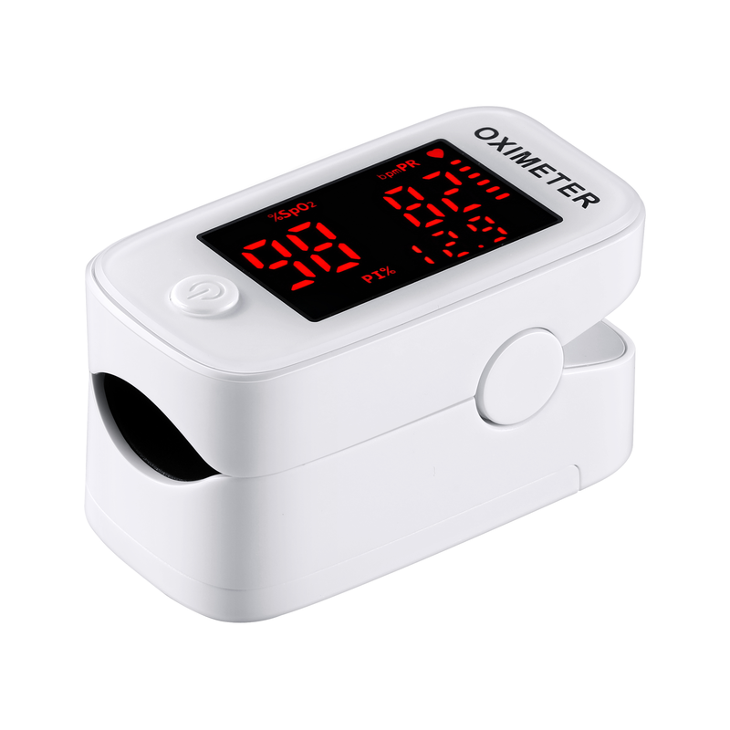
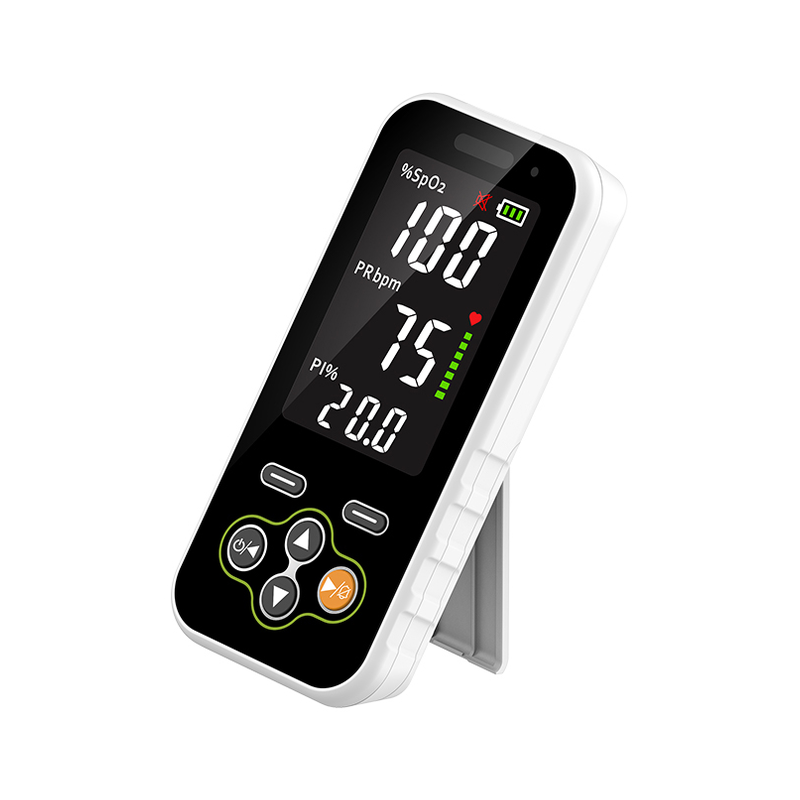
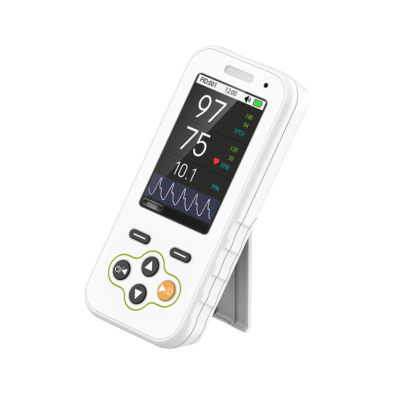

HANDHELD / 手持式
YH01
3.5-inch LED display · SpO₂ & pulse rate
Explore fingertip and handheld pulse oximeters for your product portfolio. Review model configurations and discuss your OEM/ODM requirements.


Select a series to explore its models and configurations.
Select a series above to view its models.
| Specification | Details |
|---|
Review YH01 and YH02 for your handheld pulse oximeter project.
3.5-inch LED display · SpO₂ & pulse rate

3.5-inch TFT display · SpO₂ & pulse rate
Explore the signal-platform directions behind our pulse oximeter development. Model-specific applicability and supporting evidence belong in the technical detail page.
Share your preferred model, target market and customization requirements.